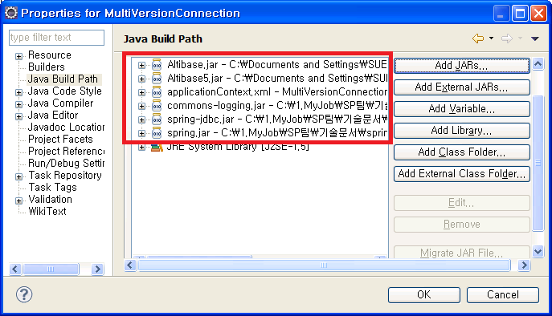

ALTIBASE에서 제공하는 FailOver와 Multi-version ALTIBASE 연동하는 방법에 대해 설명한다.
FailOver를 이용한 Connection
ALTIBASE 5.3.3부터 FailOver를 지원하는데, FailOver를 사용하기 위해서는 Connection URL부분에 FailOver 관련 속성을 넣어주면 된다.
다음은 FailOver를 이용하여 ALTIBASE에 연결하는 예제이다. DataSource는 위에서 기술한 방법 중 DBCP를 이용하였다.
예) FailOverConnection의 applicationContext.xml 파일
… <bean id="dataSource" class="org.apache.commons.dbcp.BasicDataSource"> <!-- JDBC Driver 클래스 명 설정 --> <property name="driverClassName" value="Altibase.jdbc.driver.AltibaseDriver" /> <property name="URL" value="jdbc:Altibase://192.168.1.62:21020/mydb?AlternateServers=(192.168.1.146:21020) &ConnectionRetryCount=1&ConnectionRetryDelay=1&SessionFailOver=on &LoadBalance=off”/> " /> <property name="username" value="test" /> <property name="password" value="test" /> </bean> …
Connection URL 부분에 정의할 수 있는 FailOver 관련 property는 다음과 같다.
Property | 설명 |
|---|---|
AlternateServer | 장애 발생시 접속하게 될 가용 서버를 나타내며 (IP Address1:Port1, IP Address2:Port2,...) 형식으로 기술한다. |
ConnectionRetryCount | 가용 서버 접속 실패 시, 접속 시도 반복 횟수 |
ConnectionRetryDelay | 가용 서버 접속 실패 시, 다시 접속을 시도하기 전에 대기하는 시간(초 단위) |
LoadBalance | on으로 설정하면 최초 접속 시도 시에 기본 서버와 가용 서버를 포함하여 랜덤으로 선택한다. off로 설정하면 최초 접속 시도 시에 기본 서버에 접속하고, 접속에 실패하면 AlternateServer로 기술한 서버에 접속한다. |
SessionFailOver | STF(Service Time Fail-Over)를 할 것인지 여부를 나타낸다. |
FailOver는 첨부된 예제 중 FailOverConnection 프로젝트를 참조하면 된다. FailOverConnection 프로젝트를 실행하기 위해서는 Spring 설정 library 파일 이외에 Altibase.jar, spring-jdbc.jar, common-logging.jar 파일이 필요하다.
ALTIBASE와 이전 버전을 동시에 Connection
ALTIBASE 는 하나의 어플리케이션에서 ALTIBASE 하위 버전을 동시에 연결할 수 있다.
기존의 Altibase.jar와 구별하기 위해 별도로 명명만 바뀐 ALTIBASE 5 버전의 JDBC Altibase5.jar 가 필요하다.
다음은 Altibase.jar와 Altibase5.jar 파일을 이용하여 두 버전의 ALTIBASE의 드라이버를 로딩하는 예제이다.
예) MultiVersionConnection의 applicationContext.xml 파일
<!—ALTIBASE 6 버전에 대한 DataSource 설정 --> <bean id="dataSource1" class="org.springframework.jdbc.datasource.DriverManagerDataSource"> <!-- JDBC Driver 클래스 명 설정 --> <property name="driverClassName" value="Altibase.jdbc.driver.AltibaseDriver"/> <!-- connection URL 대문자 주의--> <property name="URL" value="jdbc:Altibase://127.0.0.1:20300/mydb"/> <!-- DB 사용자 계정 설정 --> <property name="username" value="sys"/> <!-- DB 사용자 패스워드 설정 --> <property name="password" value="manager" /> </bean> <!—ALTIBASE 6 이전 버전에 대한 DataSource 설정 --> <bean id="dataSource2" class="org.springframework.jdbc.datasource.DriverManagerDataSource"> <!-- JDBC Driver 클래스 명 설정 --> <property name="driverClassName" value="Altibase.jdbc.driver.AltibaseDriver"/> <!-- connection URL 대문자 주의--> <property name="URL" value="jdbc:Altibase://192.168.1.35:21129/mydb"/> <!-- DB 사용자 계정 설정 --> <property name="username" value="sys"/> <!-- DB 사용자 패스워드 설정 --> <property name="password" value="manager" /> </bean> <!-- DAO 클래스의 bean 설정 --> <bean id="accountDao1" class="com.altibase.banking.AccountDao"> <property name="dataSource" ref="dataSource1"/> </bean> <!-- DAO 클래스의 bean 설정 --> <bean id="accountDao2" class="com.altibase.banking.AccountDao"> <property name="dataSource" ref="dataSource2"/> </bean> …
MultiVersionConnection의 AccountApp.java파일
…
Resource resource = new ClassPathResource("applicationContext.xml");
BeanFactory factory = new XmlBeanFactory(resource);
AccountDao accountDao1 = (AccountDao)factory.getBean("accountDao1");
AccountDao accountDao2 = (AccountDao)factory.getBean("accountDao2");
…
예제에 포함된 MultiVersionConnection프로젝트를 실행하기 위해서는 기존에 사용했던 jar 파일 뿐만 아니라, Altibase.jar와 Altibase5.jar 파일이 필요하다. 이 파일들은 ALTIBASE가 설치된 디렉토리($ALTIBASE_HOME)의 lib 디렉토리 안에 존재하는데 ALTIBASE 5 버전의 Altibase5.jar 파일, 그 이전 버전의 Altibase.jar 파일을 사용하면 된다.

{kind=link}